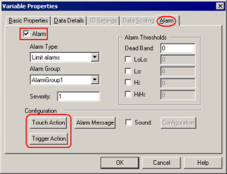
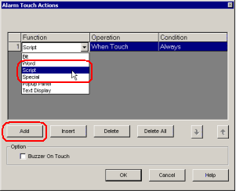
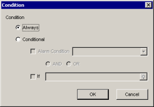
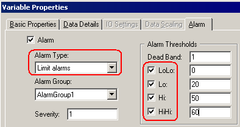
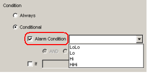
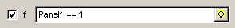
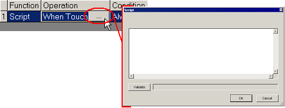

|
|
|
|
|
|
|
|
Alarm Scripts run when an alarm is triggered or when an alarm message is selected in an alarm summary object.
When you want the script to run when an alarm becomes active, set up an AlarmTriggerAction.

When you want the script to run when the alarm message is selected in an alarm summary display, set up an AlarmTouchAction.


If a Alarm Trigger script uses while or for loops and takes more than five seconds to complete, or if a Touch Action script uses while or for loops and takes more than two seconds to complete, the script will be terminated so panel operations can continue.
Set up alarm trigger scripts in the alarm properties for a variable. You can set up a Touch Action, as shown in the following steps, or a Trigger Action. For more information on how to set up a Trigger Action, see Section 16.3.4.1, Trigger Actions.
In the Variable Editor, double-click a variable's row number to display the Variable Properties dialog box.

In the Alarms tab, select the Alarm checkbox and click either the Touch Action or Trigger Action button.
Click Add, then select Script as the Function.

Double-click the Condition field and define the condition that must be true for the operation to run.

|
Property |
Description |
|
|---|---|---|
|
Always |
Touch Action. The script runs when the alarm message is selected in the alarm summary. Trigger Action. The script runs when the alarm is triggered. |
|
|
Conditional |
Alarm Condition |
Available when setting up actions for integer or float variables. Use this setting to run the script when the alarm reaches an alarm limit.
For example, when the Alarm Type is Limit Alarms, you can run the script for one alarm limit (LoLo, Lo, Hi, or HiHi) by selecting that limit in the Alarm Condition.   |
|
AND, OR |
When both the Alarm Condition and If checkboxes are selected, you can define whether to run the script when both statements are true (AND), or whether to run the script when either statement is true (OR). |
|
|
If |
Select the If checkbox and define a variable or expression. The script runs when the variable or expression evaluates to any value other than zero.  In other words, the script does not run when the expression is zero. For information about how to write expressions, see Section 6.14, Assigning Variables Using Expressions. |
|
Double-click the Operation cell to access the Script dialog box and write the script.

For instructions on writing scripts, see Section 18.3, Writing Scripts.

When working with alarm trigger scripts, because the script editor is a dialog box, to add [Tab] spaces press [Ctrl]+[Tab].